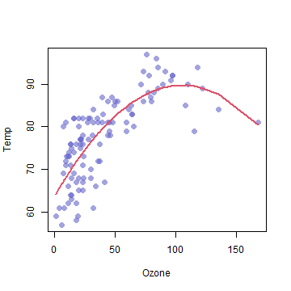

The purpose of this app is to visually demonstrate the overfitting of data when applying regression models.
The user is prompted with a slider input bar to choose an order polynomial for the model to fit the data.
Omar Safwat
The purpose of this app is to visually demonstrate the overfitting of data when applying regression models.
The user is prompted with a slider input bar to choose an order polynomial for the model to fit the data.
library(shiny)
shinyUI(fluidPage(
sidebarLayout(
#Include slider input in side bar panel with a submit button
),
mainPanel(
#Text output for MSE of training and Validation datasets
#Plot the fitted model
#Add a documentation tab to briefly explain the program
)
))
#Load the necessary packages and data
shinyServer(function(input, output) {
#mdl is fit reactively as the user input changes
mdl <- reactive({i
#slider input is assumed to be "2" for this presentation
deg = 2
lm(Temp ~ poly(Ozone, deg), data = training)
})
#output training and validation sets error (output$pred1 $ output$pred2,
#respectively)
output$pred1 = renderText({
mean((training$Temp - predict(mdl(), newdata = training))^2)})
output$pred2 = renderText({mean((y_cv - predict(mdl(), newdata = cv))^2)})
#plot the data....
})
## Training set error Validation set error
## 36.16538 32.00387
output$plot1 = renderPlot({
plot(data$Ozone, data$Temp, col=rgb(0.4,0.4,0.8,0.6), pch = 16, cex = 1.3, xlab = "Ozone", ylab = "Temp")
mdl2 = lm(Temp ~ poly(Ozone, input$deg), data = data) #Assume a user input of 2
iX = sort(data$Ozone, index.return = T)$ix
lines(x = data$Ozone[iX], y = predict(mdl2, newdata = list(Ozone = data$Ozone[iX])), col = 2, lwd = 2)
})
